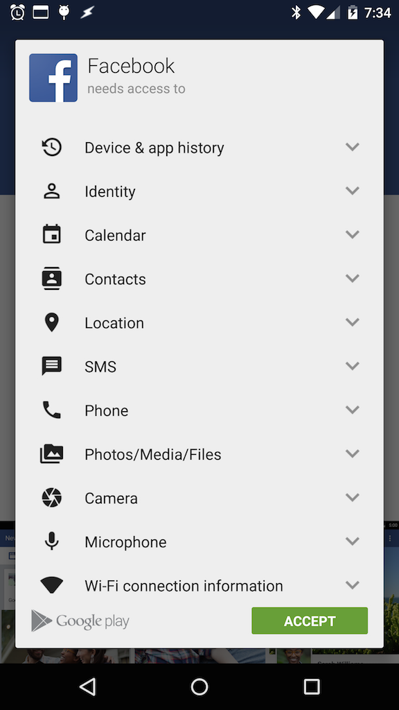
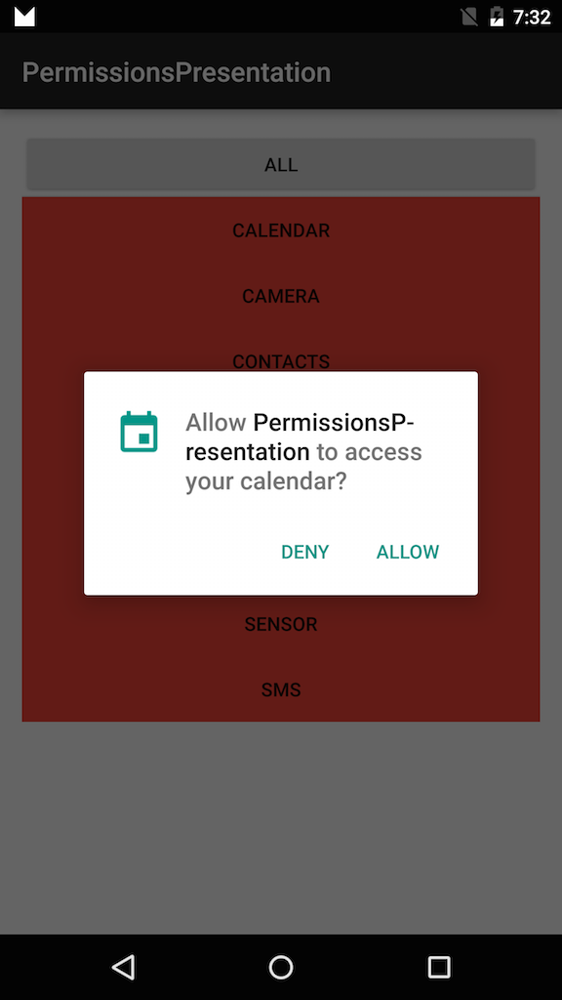
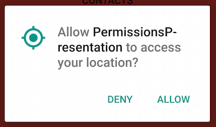
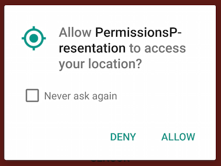
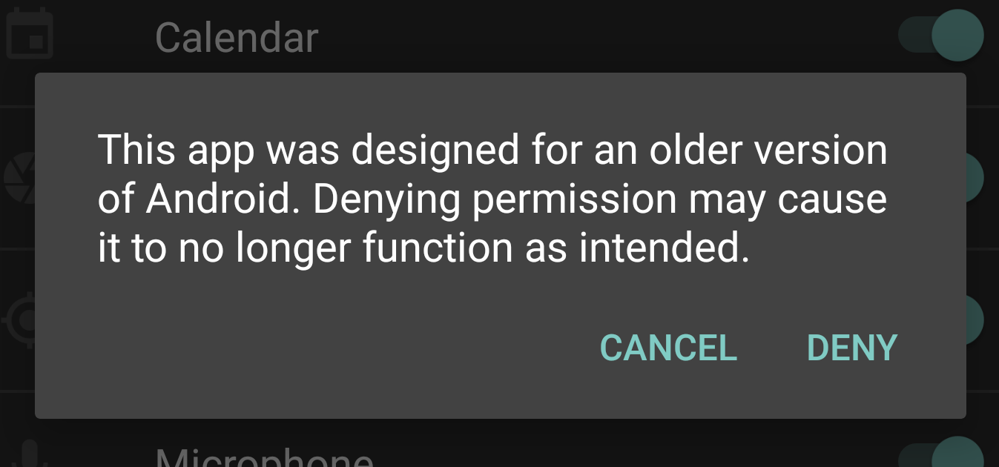

Created by Seth Clark / +Seth
From Install-Time to Runtime
| Install Time | Runtime |
|---|---|
|  |  |
More freedom to request new permissions
Defer permission requests until needed
Recover gracefully from permission denial
Provided degraded/altered experience or disable feature?
Block app when important permissions aren't granted
| First Request | Second Request |
|---|---|
|  |  |
if(checkSelfPermission(Manifest.permission.READ_CONTACTS)
!= PackageManager.PERMISSION_GRANTED) {
//Oh No!
}
//From my activity
requestPermissions(new String[]{Manifect.permission.READ_CONTACT},
PERMISSION_REQUEST_ID);
//From my activity
@Override
public void onRequestPermissionsResult(int requestCode,
String[] permissions, int[] grantResults) {
if(grantResults[0] == PackageManager.PERMISSION_GRANTED) {
//Whoop whoop!
} else {
//Ah shucks!
}
}
Keep in mind, you must check everytime.
The user at any point could revoke any previously granted permission
Use Intents instead
Instead of:
Intent intent = new Intent(Intent.ACTION_CALL);
intent.setData(Uri.parse("tel:1238675309"));
startActivity(intent);
Consider:
Intent intent = new Intent(Intent.ACTION_DIAL);
intent.setData(Uri.parse("tel:1238675309"));
startActivity(intent);
Users running 'M' can still revoke permissions; however, they'll be warned that the app might not run correctly
If the user revokes a permission for an older app the app will not crash due to a SecurityException, but Android will instead try to return appropriately empty data.